First, VennD will present you with a set of premises. In this case, we have three premises.
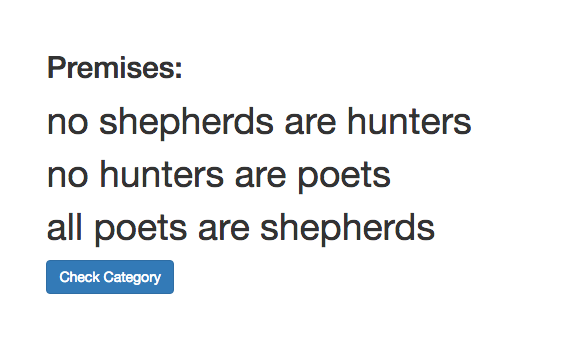
Step 1: To identify the first category, click on all instances of the category. You'll see that the word will be highlighted with blue. In this case, we start with the category, "shephards." To undo higlighting a word, just click on it again and you'll see the highlight color disappear.
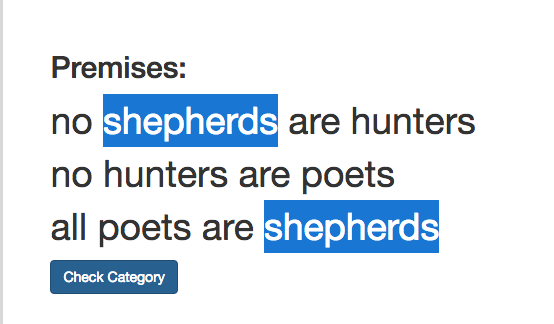
Step 2: Once you are confident that you identified all instances of the first category, click on the "Check Category" button. If you correctly identified all instances of the catogory in all premises, you'll see a Venn diagram with a label of that category pop up on the right hand side of the screen. Note that you can start identifying categories in any order.
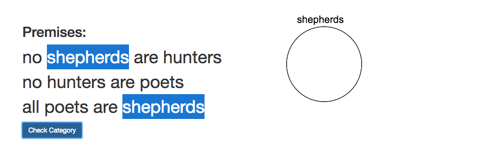
Step 3: Now, identify the second category just as you did the first one. In this case, the second category is "hunters." Click on all instances of that category in all premises and you should see the words highlighted in orange.
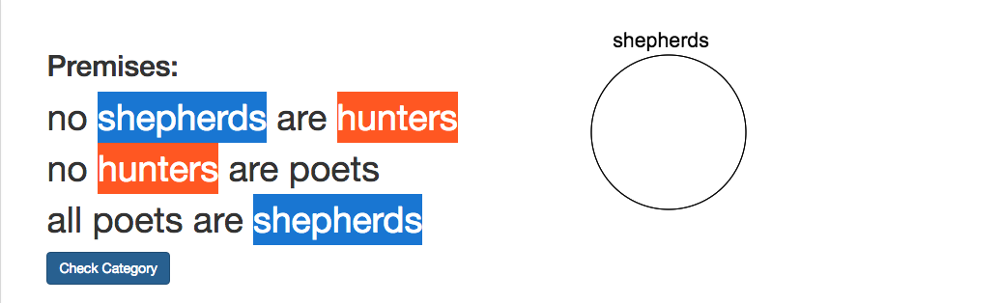
Step 4: And, click on the "Check Category" button. You'll see a Venn diagram with the label "hunters", intersecting with the "shephards" Venn diagram.
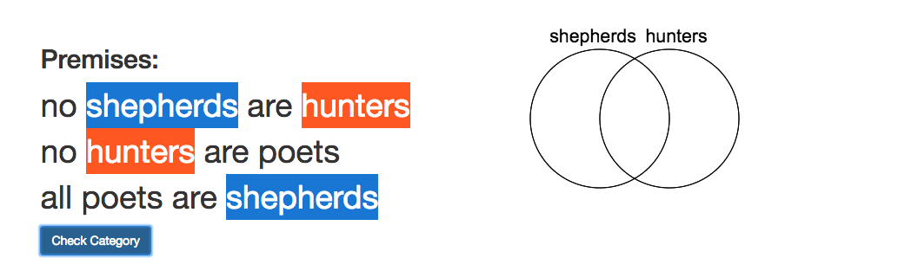
Step 5: Lastly, repeat this process for the last category. In this example, our last category is "poets". You should see the words highlighted in green. Once you correctly identify and check the last category, you should see another Venn diagram with the "poets" label pop up and intersect the previous two Venn diagrams.
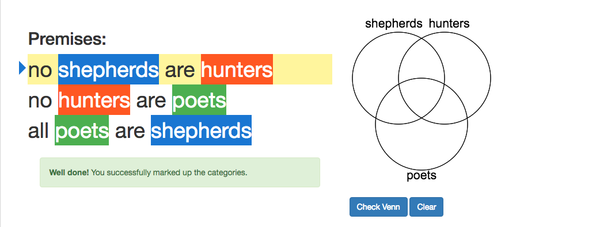
Step 6: At this point, you are done with identifying the categories! Congratulations! Now, let's mark up the Venn diagram to represent the information in premises, one premise at a time. You'll see that the first premise is highlighted yellow and there is a blue arrow pointing to the sentence on the left hand side. This yellow highlighting and the blue arrow indicate the premise for which we need to mark up the Venn Diagram.
In this problem, the first premise says "No shephards are hunters." This means that the intersection of the shephards and hunters is empty, or in other words, no element exists in that region. To indicate that nothing exists in a region, you can right click on any point inside that region and it will turn red.
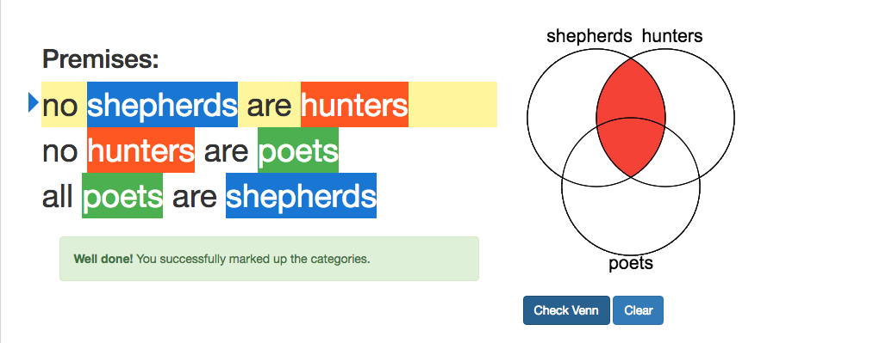
Step 7: Once you are confident that you marked up your Venn diagram correctly, click on the "Check Venn" button. If you want to clear your work on the Venn diagram and start this step over, then click on the "Clear" button. If your Venn diagram is correct, then VennD will move on to the next premise. You can see that the second premise is highlighted yellow and there is a blue arrow next to it.
Step 8: So let's get right to it and mark up the second premise on the Venn diagram as well. Be careful, though! The Venn diagram should represent the information in both the first premise and the second one. Marking up the Venn diagram is a cumulative process.
Our second premise says, "No hunters are poets." Again, that means the intersection of hunters and poets is empty, or in other words, no element exists in that region. So, we mark all the regions in that intersection with red, by clicking right on any point in that space. We then click the "Check Venn" button.
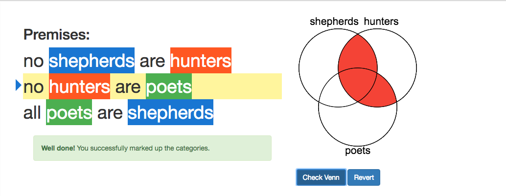
Step 9: Let's repeat this process for the third premise. The third premise says, "All poets are shephards." This statement means that no element that is not a shephard exists in the poets set. In other words, nothing exists outside the shephards set but inside the poets set, so we mark that region with red and click on the "Check Venn" button.
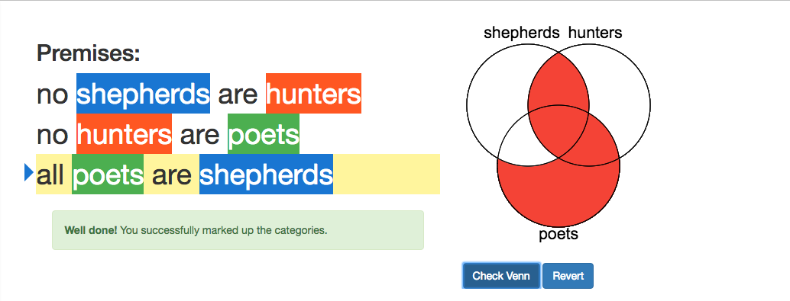
Step 10: We are almost done! Once you correctly mark up the Venn diagram for all the premises given to you in the beginning, a conclusion statement will show up in the end and by using the information in your Venn diagram, you will need to determine whether that statement is valid or not valid.
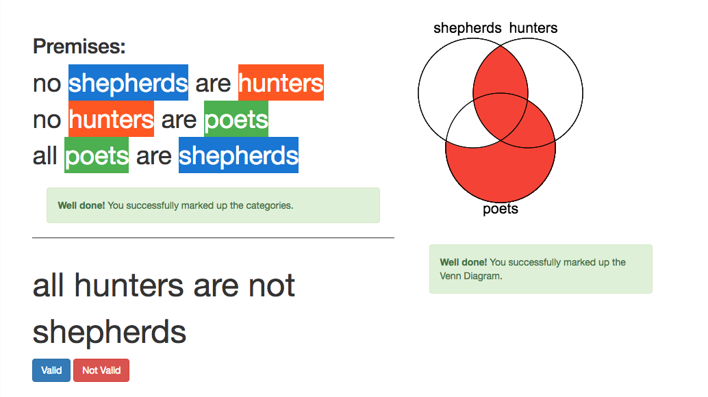
In this case, the conclusion statement says, "All hunters are not shephards." We therefore check whether the intersection of hunters and shepards is empty, and it is since that region is marked with red. Therefore, the conclusion statement has to be true so we click on the "Valid" button. And, YAY!
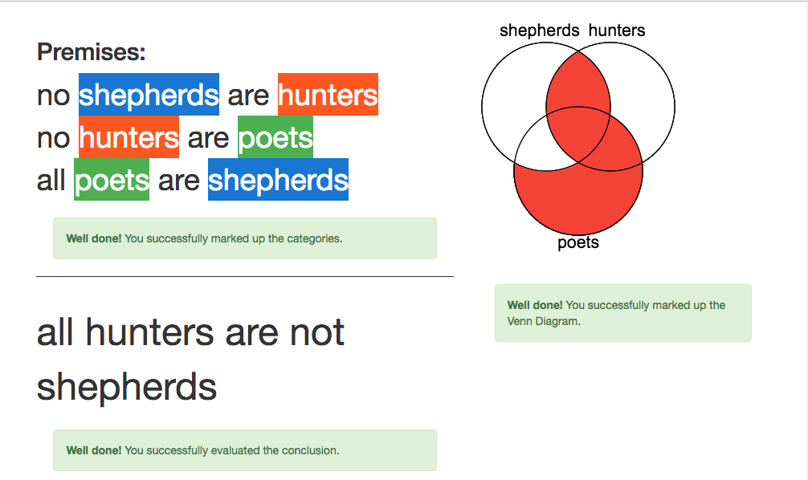
Step 11: We are done with this problem! To practice a new problem, we click on the "New Problem" button.
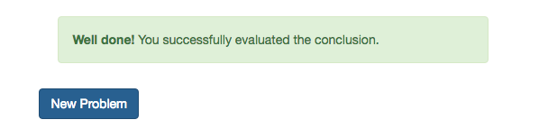